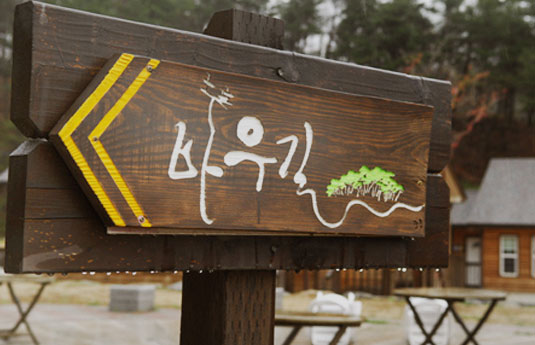
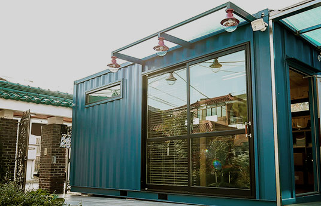

바우길 코스와 지도안내를 해 드립니다.
자연적이고 인간 친화적인 트레킹 코스를 만나보세요.
구간 안내

강릉 바우길 게스트하우스는 모두에게 열려있습니다.
걷다가 지쳐 쉬어갈 때 강릉 바우길
게스트 하우스가 최고의 휴식처가 되어 드립니다.
예약하기
갤러리
야트막한 고원에 펼쳐진
풍력발전소
백두대간의 줄기에서
푸른 동해바다까지
허난설형 유적지를 지나는
역사 문화탐방로
봄부터 가을까지
철마다 달리 피어나는 야생화
숲길을 따라 명주군왕릉
까지 가는 소나무숲길
바우(Bau)
바빌로니아 신화에 손으로
한 번 어루만지는 것만으로도
죽을 병을 낫게 하는
아주 친절하고도 위대한
건강의 여신이기도 합니다.
이 길을 걷는 사람 모두
바우 여신의 축복처럼
저절로 몸과 마음이
건강해졌으면 하는
바람을 길 위에 담았습니다.
아름다움과 추억을 전해주는
경포호숫길의 정취
바우(Bau)
바빌로니아 신화에 손으로
한 번 어루만지는 것만으로도
죽을 병을 낫게 하는
아주 친절하고도 위대한
건강의 여신이기도 합니다.
이 길을 걷는 사람 모두
바우 여신의 축복처럼
저절로 몸과 마음이
건강해졌으면 하는
바람을 길 위에 담았습니다.
바우길은 어느 길도 강원도의 자랑과도 같은
금강소나무 숲이 70%이상 펼쳐져 있습니다.
파도가 밀려드는 해변조차도 소나무 숲 길 사이로 길이 나있습니다.
소나무 숲 길은 그 곳에서 휴식하며 숨을 쉬는 것만으로도
우리의 지친 심신을 치유하는 기능을 가지고 있습니다.
그런 길을 걷는 것은 삶의 에너지를 충전하고,
그 자체로 우리 건강을 지킵니다.
우리나라의 이름 난 삼림욕장 모두 소나무 숲 속에 있고,
실제로 바우길이 있는 대관령에 우리나라 최고의 삼림욕장이 있습니다.
바우길을 걷는 것은 트레킹과 삼림욕을 동시에 하는 일입니다.
후원하기
바우길의 주인이자
이 길과 함께 걷는
후원자가 되어 주십시오.
다 함께걷기
바우길 주말 걷기 축제
일정 안내입니다.
올림픽 아리 바우길
2018 평창 올림픽의 유산,
명품 트레킹 코스를
만나보세요.
기념품
기념품 및 여행상품을
판매합니다.